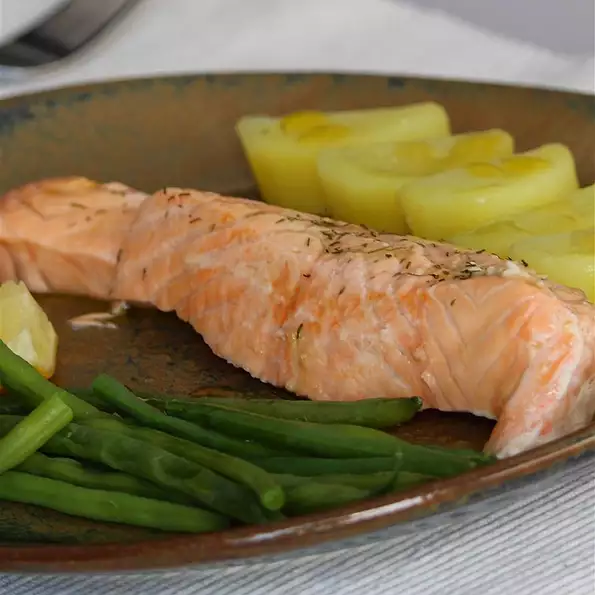

Lemon Dill Salmon

Scrum Dilly umptious Lemon Dill Salmon
Forget every other salmon recipe you know, because this lemon dill salmon will blow your socks off!
Ingredients
- ½ pound baby red and yellow potatoes, or to taste
- 1 cup fresh green beans, trimmed, or to taste
- 2 tablespoons olive oil, divided
- 2 (6 ounce) salmon fillets
- 1 clove garlic, crushed
- 1 sprig chopped fresh dill
- ½ lemon, sliced
- ½ lemon, juiced
- ½ teaspoon freshly ground black pepper
- ⅓ teaspoon coarse salt
Instructions
- Preheat oven to 325 degrees F (165 degrees C).
- Place a steamer insert into a saucepan and fill with water to just below the bottom of the steamer. Bring water to a boil. Add potatoes and green beans, cover, and steam until tender, about 10 minutes. Drain.
- Brush the shiny side of 2 large pieces of aluminum foil with 1 teaspoon olive oil each. Place salmon skin-side down in the center. Brush remaining olive oil and garlic over salmon. Sprinkle dill on top. Divide lemon slices over salmon; squeeze 1/2 lemon on top. Season with 1/2 teaspoon pepper and 1/3 teaspoon salt.
- Cover salmon with 2 pieces of aluminum foil, shiny-side down. Roll aluminum foil inwards on all sides to create a pouch. Transfer pouches to a baking sheet.
- Bake in the preheated oven until salmon flakes easily with a fork, 10 to 12 minutes.
- Mix mayonnaise and capers together in a small bowl to make a tartar sauce. Stir in juice from 1 lemon, 1/2 teaspoon pepper, and 1/4 teaspoon salt.
- Serve steamed potatoes, green beans, and tartar sauce alongside salmon.